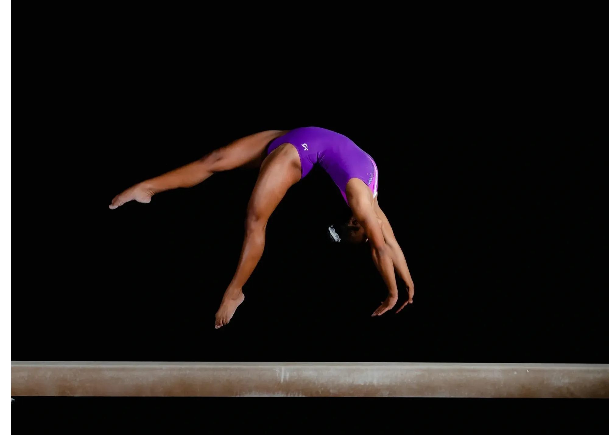

Elite gymnastics is the hardest level to reach in the sport of gymnastics. This is the level that many olympians or top named gymnast compete at. Being an elite gymnast, you travel all over the world for many competitions. You travel for worlds, the olympics, championships, etc.
JO(Junior Olympics) is where many gymnasts will reach and stay in this level before college. This level is considered level 9/10, which are the next hardest levels after elite gymnastics.
College gymnastics is where the fun is. Being a collegiate athlete is where all your dedication and hard work payed off to earn a division 1 spot on a collegiate team. You will travel and compete against many college teams during the gymnastics season. BYU is one of the top teams and was ranked at 11th in the nation at one point!
For the olymptics, it takes so much dedication and perservance to get to this level in the sport. Competing for USA specifically, there are many top athletes who represent the US before competing at the hardest level of competition. USA has finished first in gymnastics every olympics since 2012!
Gymnastics is one of the hardest sports possible. It takes so much time and dedication to continue on in this sport and pushing yourself to get to where you want to be. For me, when I did gymnastics, I would practice around 34 hours per week, going everyday except sunday. I would do 2x practices monday-thursday, then on friday and saturday were 1x practices. Gymnastics is a sport that takes a toll on your body and mind. Many people start this sport when you can first start walking, but for me, I was considered "late" in the sport for starting at age 7. It is such a hard sport, but very rewarding at times.